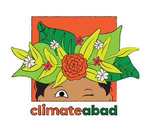

Trade Mark Journal No.2025/047 21 November 2025
UK00004290851 7 November 2025 (9,16,25,35,38,41)

- Class 9
- Electronic publications; Downloadable publications; Electronic publications, downloadable; Downloadable electronic publications; Downloadable podcasts; Downloadable media; Downloadable videos; Downloadable posters; Downloadable educational media.
- Class 16
- Periodical publications; Printed periodical publications; Printed publications; Publications (Printed -); Educational publications; Promotional publications; Magazines [periodicals]; Printed periodicals; Printed pamphlets; Printed brochures; Printed newsletters; Printed booklets; Printed reports; Photographs [printed]; Printed photographs; Printed flyers; Printed leaflets; Printed stationery; Printed paper invitations; Printed programmes; Printed research reports; Printed calendars; Printed questionnaires.
- Class 25
- Clothing; Ready-to-wear clothing; Garments for protecting clothing; Layettes [clothing]; Headbands [clothing]; Clothes; Parts of clothing, footwear and headgear; Hoods [clothing]; Wristbands [clothing]; Casual clothing; Visors [clothing]; Jackets being sports clothing; Ready-made clothing.
- Class 35
- Advertising in periodicals, brochures and newspapers; Dissemination of advertising material [leaflets, brochures and printed matter]; Publication of publicity materials and texts; Publication of publicity materials on-line; Producing promotional videotapes, video discs, and audio visual recordings.
- Class 38
- Transmission of podcasts; Electronic transmission of images; Radio and television broadcasting; Broadcasting of radio and television programmes; Radio and television programme broadcasting; Video broadcasting; Radio broadcasting of information and other programs; Digital audio broadcasting; Broadcasting of radio and television programs via cable or wireless networks; Broadcasting of television programs via the Internet; Audio, video and multimedia broadcasting via the Internet and other communications networks.
- Class 41
- Educational research; Workshops for educational purposes; Development of educational materials; Organization of exhibitions for cultural or educational purposes; Organization of exhibitions for cultural and educational purposes; Educational and training services; Organisation of educational seminars; Planning of lectures for educational purposes; Organisation of exhibitions for cultural and educational purposes; Organisation of exhibitions for cultural or educational purposes; Organization of exhibitions for educational purposes; Organization of educational conferences; Arranging of exhibitions for cultural or educational purposes; Planning of seminars for educational purposes; Educational services provided for children; Planning of conferences for educational purposes; Publication of educational and training guides; Festivals (Organisation of -) for educational purposes; Conducting of educational conferences; Organisation and holding of fairs for cultural or educational purposes; Developing educational manuals; Education; Organising of conferences for educational purposes; Publication of printed matter and printed publications; Publication of newspapers, periodicals, catalogs and brochures; Publication of books, magazines, almanacs and journals; Publication of booklets; Publication of printed matter, other than publicity texts; Publishing of electronic publications; Publication of printed matter; Publication of periodicals; Publication of periodicals and books in electronic form; Publication of brochures; On-line publication of electronic books and journals; Publication of magazines; Publication of electronic magazines; Publication of printed matter, other than publicity texts, in electronic form; Publication of educational printed matter; Multimedia publishing of magazines, journals and newspapers; Publication of posters; On-line publication of electronic books and journals (non-downloadable); Online publication of electronic newspapers; Publication of electronic books and periodicals on the Internet; Publication of books; Publishing of medical publications; Multimedia publishing of electronic publications; Publication of printed matter in electronic form; Publishing of printed matter; Multimedia publishing of printed matter; Publication of leaflets; Electronic publications (not downloadable).
Risham Waseem